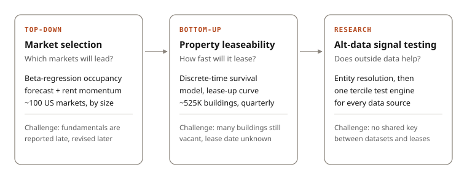

Market ranking (top-down)
A beta regression on long panel data forecasts occupancy for ~100 US industrial markets. Beta regression respects occupancy's 0–1 bounds and its tightening variance near full occupancy, which ordinary least squares handles only by clipping after the fact. The forecast is blended with a deliberately uncorrelated rent-momentum signal into a market revenue ranking. A second cut splits each market by building size (shallow-bay vs. bulk), the level at which deals are actually underwritten.
Property leaseability (bottom-up)
A discrete-time survival model estimates a per-quarter hazard and rolls it into a lease-up curve for each building. Survival modeling fits better than a fixed-horizon classifier because lease-up depends on market conditions that change every quarter, and many buildings are still vacant, so their outcome is censored. New construction (scored from delivery) and re-lease (re-scored each quarter) are fit separately because their drivers differ. Earlier versions used gradient-boosted trees trained on synthetic sets from hedonic modeling.
Geospatial features
Point-of-interest access (highways, ports, airports) at census-tract level, plus 15-minute drive-time aggregates of nearby space fundamentals and lease-up events. A same-subtype variant keeps a warehouse's comparison set from being diluted by nearby flex buildings. These features were among the largest single drivers of model lift.
Alternative-data hypothesis testing (research)
A framework to test whether outside data carries investment signal beyond standard fundamentals. Consumer card-panel spend, labor-cost data, maritime import shipments and freight flows were linked to individual properties through address matching and geographic-proxy joins, since none share an identifier with lease records. Every source runs through the same engine: split properties into sensitivity terciles each period, then track forward rent growth by group. The strongest signals became ongoing inputs to investment decisions.
Skills
- Survival analysis
- Beta regression
- Panel forecasting
- Geospatial features
- Entity resolution
- Signal research